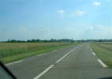
Auneau, un bourg de Beauce qui a organisé une fête multi-disciplines "préhistorique" ! En arrivant, on aperçoit de la plaine l'église, et 2 doigts à gauche, la plus haute tour du château. L'étang près duquel se dérouleront les festivités est dans le creux à gauche du château...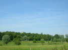
Sur une île de l'Etang, une énorme gloriette abrite un arbre, hélas mort... Les plaines qui nous en séparent ont l'air propices au cerf-volant, mais en fait, il y a des zones de ronces très attachantes, et la rivière nous en sépare. Je fais tomber mon Spiralier dans l'Etang au pied de la Gloriette, dans l'eau, bien sûr. Plus qu'à prendre la voiture, remonter à la route et marcher 500 m pour le récupérer... en espérant que la ligne suivra quand on la ramènera au retour ! Mais ce n'est pas un de ces grands festivals multi-cervolistes et il y a bien assez de place pour nous. Malheureusement le vent est assez turbulent, s'inversant même parfois !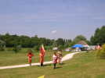
Il y a bien d'autres animations, dont le village préhistorique (au fond) et ses ateliers (allumage de feu, taille de silex, tannage de peaux de lapin...) ! Et aussi des médiévalistes en costumes avec bannières, arcs et arbalètes...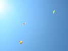
Bon, quelques cerfs-volants légers sont quand même un peu montés, mais personne n'arrive à dépasser une hauteur de 50 m environ !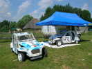
Au sol, des 2CV cross ont débarqué et ont monté leur expo. Elles ont un pot (très petit !) par cylindre, et leur bruit rappelle celui de gros bicylindres à plat comme les motos BMW...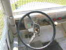
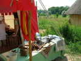
Dans le "village", quelques ateliers comme celui médiéval de fabrication d'armes. Les haumes et les armes étincellent au soleil !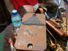
Une cotte de maille est facile à faire : on enroule un fil de fer sur un axe, on coupe pour faire des anneaux, plus qu'à les entrelacer... Faut juste un "certain" temps... Une cotte arrête les flèches classiques à pointe large, mais évidemment, les archers ont inventé la flèche pointue baptisée "perce-maille"...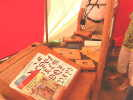
Un fabricant de livre "d'époque" sur mesure, en bois, ficelle et papiers divers présente ses créations, à la couverture ornée de motifs en bronze... Amateur, il ne fait payer que ses fournitures !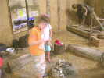
Dans l'atelier "feu", on frappe des silex pour faire des étincelles, mais de là à réussir ! Il semble y avoir aussi une méthode avec une tige de fouet qu'on fait tourner avec un archet. Au fond, des personnages illustrent les choses...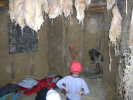
Des peaux de lapin bourrées de paille sont aussi mises à sécher ! Ca sèche bien, mais c'est raide et le poil tombe par plaques... C'est bien pour du parchemin ! Le vrai tannage est complexe, mais corrige ces défauts...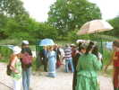
On voit aussi apparaître des personnages 1900, en canotier, redingote ou chapeau à plume et robe à "faux-cul" !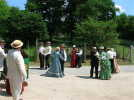
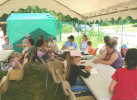
Nous avons laissé tomber les cerfs-volants pour rejoindre la table où on nous accueille, sous un barnum bienvenu !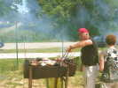
Mais on nous servira un bon petit apéritif pendant que les moutons cuisent sur les grilles...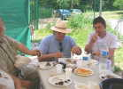
Salades diverses, barbecue, fromage, dessert, l'organisation a bien fait les choses, on se régale...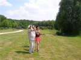
C'est reparti, Catherine a lancé son Jessica blanc léger ! Sylvien immortalise les cerfs-volants pour sa collection...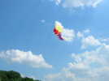
Deux nouveaux arrivants, qu'on a connus il y a bien 15 ans mais qu'on retrouve avec plaisir, Serge Lecomte et Jean-Pierre Paulin ! Serge lance son grand Faga après avoir patiné un peu pour le montage...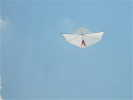
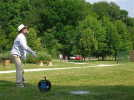
Bon, ce n'est pas tout de monter très haut, vers 18 h, on se dit qu'il faut redescendre... Gilles Poutous ramène bras sur bras jusqu'à épuisement, en faisant des petits tas par terre. Heureusement, il sait qu'il faut retourner les tas avant de rembobiner...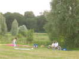
Eprouvé par ses efforts, Gilles s'accorde une petite pause à l'ombre avec sa famille !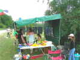
L'Antenne de Beauce a bien rempli son stand (merci, mais petit, quand même !) avec des cerfs-volants, moulinets, panneaux d'exemples de ses (nos) productions... Ca a attiré pas mal de monde avide de renseignements, pas beaucoup de recettes mais ça n'est pas vraiment le but...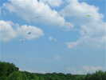
Mais le vent est bien meilleur maintenant, on ne va pas quitter si tôt ! Alors on remet tout en l'air maintenant qu'on peut monter dans une bonne stabilité avec un bon Force 2...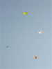
Il est 19 h 22 et personne n'a envie de partir, il fait plus frais (un peu) et le vol est parfait... François, lassé des frasques de son Flare a sorti son fidèle Rokkaku... Pascal Pavel fait voler son Jessica orné de parallélépipédes obtenus en superposant des épaisseurs du même jaune...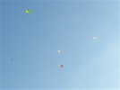
Quatre cerfs-volants, 5, 6, de plus en plus de monde en l'air, on fait l'impasse sur le dîner maintenant que les galères de la journée sont passées et que ça vole comme dans un rêve !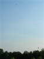
8 h moins 10, Gilles a décidé de faire des photos du château et du site, il envoie son Jessica vers 400 m ! C'est le cerf-volant le plus à gauche des deux. La nacelle est vers 200 m...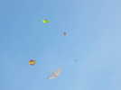
20 h 22, le vol est bien stable et tout le monde s'est mis à l'ombre sous le même arbre ! On discute, on s'emmêle un peu mais pas grave entre bons cervolistes...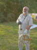
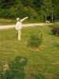
Bon, Gilles se met quand même à résorber ses 400 m ! Il va se faire du mal, s'il continue sur ce rythme !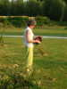
Gilles tire la ficelle, et sa femme la rembobine pendant que Luka tient le Jessica blanc et veille aux démêlages...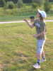
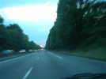
Finalement tout le monde finit quand même par partir, je quitte à 21 h, François est encore en l'air ! Un beau soleil couchant bien rouge me guide vers la maison, tout le monde ne peut pas avoir son étoile-guide...